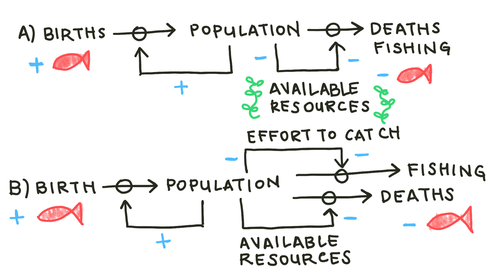
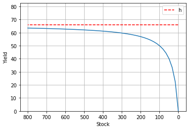
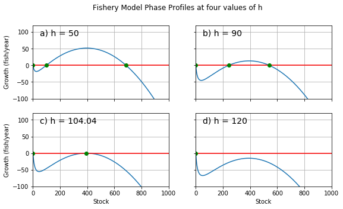
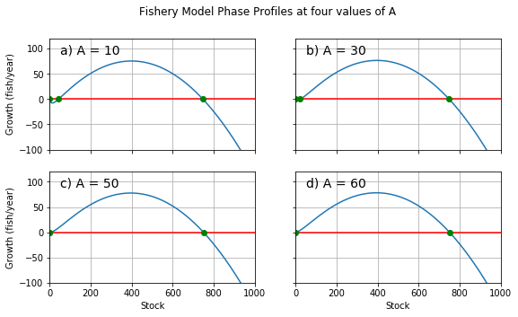

Bifurcations and Equilibrium¶
In the previous section, we explored a simplified model of fishery dynamics. In this section, we’ll explore a more complex model that includes the pressure of active fishing, and see how it responds to changes in the system’s parameters. What happens to the fixed points’ stability and location? What do the changes say about the system’s overall robustness?
Introducing fishing pressure¶
In the previous chapter, there was only one flow into our fish stock (births), and only one flow out (deaths). In an active fishery, there is another flow causing outward pressure on the stock: fish can also be removed from the stock by fisherfolk. You might imagine those fisherfolk pulling from the stock with a flat catch rate. A stock-and-flow diagram representing such a system is drawn below, in Fig 1a.

Fig 1: Causal loop diagrams representing two possible active fishery models. In the first (a), fisherfolk pull fish from the stock at a flat rate. In the other (b), feedback from the stock reduces fishing catches as the stock depletes, due to the increased effort required when there are fewer fish to catch.
The logic of Fig 1a is represented symbolically in Equation 1.
The new parameter \(h>0\) represents a flat fishing quota. The fisherfolk that depend on the redfish population set out to catch the same number of fish every day, regardless of the number of fish remaining in the stock.
Now, you might think that the fisherfolk’s catches should change as the size of the stock changes. You’ve intuited an important feedback in the system: that of the effort required to catch. That feedback is honored in Fig 1b, and represented symbolically in Equation 2.
We might call \(\frac{hn}{A+n}\) an inverted saturation term. It represents the number of fish that the fisherfolk actually collect. As \(n\) decreases, the effort parameter \(A\) dominates the term’s denominator, decreasing the magnitude of its contribution. That dynamic is demonstrated in Fig 2.
# Constants
r = 0.5 # intrinsic growth rate
K = 800 # carrying capacity
h = 50 # fishing quota
A = 30 # saturation term / catch difficulty
# Saturation Demo
def saturation(n):
return h*n/(A+n)

Fig 2: A demonstration of the saturation term. The value of the term represents the number of fish our modelled fisherfolk succesfully catch. That yield is plotted here for each value of n, with their intended catch h marked by the red dotted line. As n decreases, the yield falls farther and farther short of h.
Variables vs Parameters¶
We talk a lot about parameters in the paragraphs above. This is a quick aside to establish the difference between variables and parameters.
Variables are system values that we expect to change as a natural result of the system’s operations. Parameters are values that determine how the system goes about operating. In the context of our causal loop diagrams, you might think of variables as the size of the stocks and the instantaneous rate of the flows. Parameters, then, would dictate the strength of the feedbacks.
In this system, as in that of the previous section, the variables that we’re concerned with are \(n\), the size of the fish stock, and \(/dot{n}\), the net rate of flow into the fish stock at any given moment. In this system, though, the number of parameters we’re concerned with has increased. Before, we only had \(r\), the intrinsic growth rate, and \(K\), the carrying capacity to worry about. Now we also have \(h\), the fishing quota, and \(A\), the effort required to catch. As we will see in the next section, changing \(h\) and \(A\) has much more dramatic potential effects on the system.
Critical parameter thresholds and bifurcations¶
Equation 2 also has the benefit of preserving the fixed point at \(n=0\) (try plugging \(n-0\) into Equation 1. Try again for Equation 2). With the presence of \(n\) in the saturation term’s numerator, we expect Equation 2 to have an additional zero in comparison to the simpler logistic equation we explored last chapter. And, as we established last chapter, we can expect the additional fixed point to generate qualitatively different system behavior than what we saw before.

Fig 3: Phase diagram for our simple fishery model for four values of h. r = 0.5; K = 800; A = 16. a) At h = 50, we see three fixed points. b) h = 90. The positive fixed points grow closer as h increases. c) At about h = 104, a critical threshold is reached, and the two positive fixed points become one. d) At h = 120, both of the positive fixed points have vanished. They’ve annihilated one another. We call this event a fold bifurcation.
Our expectation is corroborated. See Figures 3a and 3b. You can clearly see the three fixed points in their full glory when \(10<h<100\). We mark a stable fixed point at \(n=0\) (\(n_{0}\)), a stable point near \(n=K\) (\(n_{2}\)), and an unstable point between them (\(n_{1}\)).
\(n_{1}\)’s instability means that it acts as a kind of point of no return for the stock’s depletion. For any value of \(n>n_{1}\), the stock will tend to self-correct toward \(n_{2}\). However, as soon as \(n\) falls below \(n_{1}\), the stock size will plummet to \(0\). The pressure applied by fishing activity decreases the system’s robustness by narrowing the range from which the system can return to its non-zero stable point. Intuitively, we might predict that increasing that pressure (by increasing the value of \(h\)) would narrow the range further, making the system even more fragile.
In fact, as \(h\) increases, \(n_{1}\) and \(n_{2}\) do approach each other. When \(h\) reaches a certain critical threshold, which we label \(h_{c}\), the stable point and the unstable point mutually annihilate. You can see this in Figures 3c and 3d. \(n_{0}\) is the only fixed point that remains. The stock will tend to deplete completely from any value of \(n\): the fishing pressure is so intense that the system has no choice but to collapse. A continuous change in the value of a system parameter has caused a major, sudden shift in the system’s qualitative structure. We call this event a bifurcation.
(You may also notice that \(n_{1}\) appears to vanish when \(h<8\). That’s an example of a different category of bifurcation, which we’ll cover later in the chapter.)
Just as we can gain insight into a system’s behavior by identifying the position and behavior of its stationary points, we can gain insight into the nature of a bifurcation by mapping its effect on those stationary points. We map that effect on what’s called a bifurcation diagram.
Mutual annihilation: the Fold Bifurcation¶

Fig 4: Bifurcation diagram for a fold bifurcation. The position of each fixed point plotted for each value of h. Solid lines mark stable points, dashed lines mark unstable points. h is plotted horizontally because we treat the parameter as an independent variable when considering bifurcations. This bifurcation category is named after the characteristic fold shape traced by the fixed points. There is also another bifurcation where the unstable point crosses n = 0.
We plot the position of the system’s fixed points at each value of \(h\). Solid lines mark the stable points, and dashed lines mark unstable points. This acts as shorthand for the information we’d get by plotting a phase diagram for every value of \(h\): the lines won’t tell us the precise rate of change, but it tells us the direction of change. We know that the system state will always flow away from dashed lines and toward solid lines, and so we can intuit the structure. In this case, we can see the range of safety, and how it narrows with increasing \(h\) until it disappears.
This category of bifurcation, in which one stable point and one unstable point annihilate each other upon collision, can be identified by the characteristic fold shape you can see in the diagram above. For that reason, mathematicians call this a fold bifurcation.
Now, even working with a modestly complex system like this one, one might expect to find more critical parameter thresholds and more sudden shifts in system topology to match. In fact, for this system in particular, we know that reducing \(h\) to \(0\) would see the system structure revert to the shape of the basic logistic system. This is a fact that we know intuitively, that we can discover from examination of Equation 2, and that we can learn by sufficiently reducing \(h\) (as I mentioned parenthetically).
This is not a fold bifurcation. In order to re-establish the full range of stability between \(n=0\) and \(n=K\), \(n_{1}\) must abandon its position between \(n_{0}\) and \(n_{2}\), which it accomplishes by moving toward and past \(n=0\). \(n_{1}\) represents the stock size at which the fish population’s birth rate struggles to balance the sum of its natural death rate and the rate of removal via fishing activity. As the pressure of fishing activity eases, it becomes possible for the birth rate to balance the removal rates at lower population sizes.
Remember, though, that \(h\) only represents the number of fish that the fisherfolk set out to catch. We’d also expect lower stock sizes to be able to sustain net population growth if it were more difficult for fisherfolk to successfully meet their quota. We can simulate this dynamic by modifying the parameter \(A\).
Trading stabilities: the Transcritical Bifurcation¶

Fig 5: Phase profiles for the fishery model at four values of A. r = 0.5; K = 800; h = 25. a) A = 10. There are three fixed points visible. b) At A = 30, the lower positive fixed point has come much closer to the fixed point at n=0. c) At the critical threshold A = 50, the lower two fixed points have become one. d) A = 60. The fixed point at n=0 is now stable. The unstable point is no longer visible.
As noted in the description of Equation 2, fisherfolk will find it more difficult to catch fish as the stock depletes. There are factors that can make this effect more or less severe: the size of the environment, for example, or the efficiency of the technology that the fisherfolk use to locate members of the stock. \(A\) will be smaller for system arrangements that make it comparatively easier to fish from small stocks (smaller environments, more efficient tech), and larger for arrangements that make meeting quota especially difficult (larger environments, less efficient tech).
As we increase \(A\), \(n_{1}\) approaches \(n=0\), following the logic detailed above. At the critical threshold \(A_{c}\), \(n_{1}=n_{0}\). For \(A>A_{c}\), \(n<0\).
Negative values of \(n\) have no physical meaning. To say that \(n_{1}\) is negative is simply a mathematically convenient way to say that there is no longer a fixed point interrupting the range of “safe” stock sizes (from which the system will return to \(n=n_{2}\)). This mathematical abstraction also gives the bifurcation diagram a convenient shape.

Fig 5: Bifurcation diagram for a transcritical bifurcation. The most positive fixed point isn’t pictured because it is well above the bounds of the axis.
Notice how \(n_{1}\) and \(n_{0}\) switch stabilities after they cross paths, \(n_{0}\) becoming unstable for \(A>A_{c}\). This is important because \(n_{0}\)’s instability means that the system state will tend toward \(n=n_{2}\) for any positive value of \(n\), as we’d hope and expect. The switch in stability is also important because it is the characteristic feature of a transcritical bifurcation.
Conclusion¶
We’ve examined two bifurcations in a modified logistic model, using two system parameters. A more advanced treatment would explore the parameters’ interactions with each other, using a multidimensional parameter space to visualize the system structure at all combinations of \(A\) and \(h\). This beginner’s foray into stability analysis and bifurcation theory, however, ends here.
Enjoy your trajectory through phase space, pick your parameter values carefully, and be sure not to fish your stocks to death.